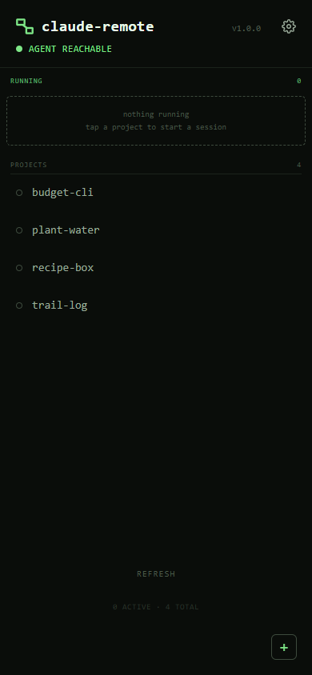
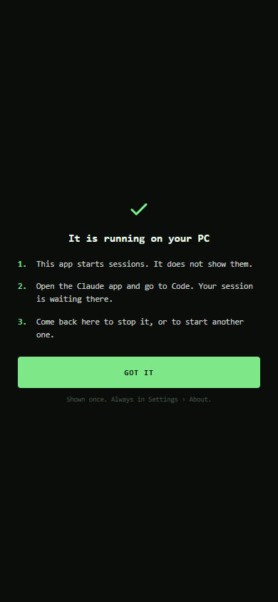
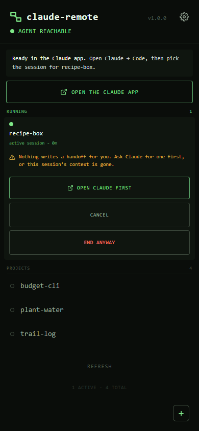

Claude Remote
A remote start button for Claude Code. Tap a project on your phone and a session starts on your Windows PC in that folder, with your own local setup: your hooks, skills, MCP servers and rules. The session then waits in the Claude app's Code tab, where you drive it, and STOP ends it from the phone. It is deliberately not a terminal: the Claude app already drives sessions well, so this only has to start one with nobody at the desk. "The cloud can have your code. It can't have your Claude."
The launch path
The phone talks only to Tailscale serve, which terminates HTTPS on the PC and proxies to a Node agent that never binds anything but loopback. Every /api route needs a token issued by the passcode. A tap runs launch-session.ps1: it changes into the project, puts a venv on the PATH or activates a conda environment from environment.yml without ever running a file from the project, marks the shared folder trusted for Claude Code so the session cannot stall on a dialog nobody can answer, and opens a visible window running claude.cmd --name=<folder> --remote-control=<name>. The tile turns green only once the agent has proved a live pid. STOP tree-kills the session with taskkill /T /F and confirms it by polling the pid, never by trusting the exit code.
Built for an unlocked phone
- ✓A passcode every time the app opens: scrypt with a per-install salt, a timing-safe compare, and a server-side limit whose delay grows with each miss but never locks the owner out for good
- ✓No first-run race: until a passcode exists every route but "set passcode" answers 403, and Tailscale serve is switched on only after it is set at the desk
- ✗No Tailscale identity headers as auth: the threat is a device that already carries your identity, so those headers would wave an attacker straight through
- ✓Every sharing change asks again: adding or removing a shared folder needs the passcode, even inside an unlocked session
- ✓Nothing on the lock screen: push messages carry only a type, so no project name ever shows on a locked phone
- ✗No free text from the phone: project names typed in the app are refused, not cleaned, and the phone sends nothing for Claude to read
F-01Web Push from the RFCs
RFC 8291 aes128gcm encryption (ECDH P-256 and HKDF) and RFC 8292 VAPID ES256 tokens written with node:crypto alone, and checked against the RFC's own test vector. No push library.
F-02A launcher built from source
A 161-line C# launcher ships as source and is compiled on the user's PC with the compiler inside Windows. It replaced conhost --headless, which swallowed exit codes and matches a known attack pattern, after review on r/PowerShell.
F-03Crash recovery in a minute
A Scheduled Task, not a Windows service, because a service runs where the Claude windows would be invisible. An every-minute trigger with IgnoreNew restarts a dead agent and never starts a second one.
F-04Updates that roll back
A Claude Code SessionStart hook spots a newer plugin, swaps the agent in the background, checks it came up, and puts the previous version back if it did not. Passcode, settings and sessions survive.
F-05A UI that never claims too much
A filled green dot means the agent proved a live pid. Starting, unconfirmed and unknown states are hollow rings, and the app never says "failed" for a launch that may in fact be running.
F-06Desk sessions show up too
A session opened at the desk is discovered and shown as "desktop", so the phone can stop it the same way. More than one Claude account is found from profile folders and shell aliases.
F-07A cache key nobody bumps
The service worker's cache key is a sha256 over the shell files, so any UI edit invalidates the old shell by itself. Hand-bumping a version is the bug it removes.
F-08A test that drives Chrome
The suite starts headless Chrome over the DevTools Protocol, with node's built-in WebSocket and no Puppeteer, and fails if any input renders under 16px, the size below which iOS zooms on focus.



- ✗Windows only. The agent is plain Node, but autostart, the launcher and the drive list are Windows. A CI job on macOS measures the port: of the 1,407 tests that run there (1,415 run on Windows), 1,092 already pass
- ✗One six-digit passcode is the only authentication: right for a single-user tailnet, wrong for a shared one
- ✗No filesystem isolation. A launched session can reach anything the user account can; Claude Code's sandbox does not run on native Windows
- ✗No live output and no way to answer a prompt from the phone, by design
- ✗The PC must be on and signed in; the agent starts at logon, not at boot
One line in Claude Code
Paste ! npx.cmd -y github:MrTig-afk/claude-remote into Claude Code at the PC. It adds the plugin, sets the agent up in the background and gives you the link to set a passcode. The README explains the whole trade before you install it.
github.com/MrTig-afk/claude-remote